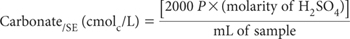

The aliquot (about 5 mL) used for EC/SE and pH/SE can be used for determination of HCO3/SE and CO3/SE by titration with standard sulfuric acid (H2SO4). The aliquot should be at ≈23–25°C.
2.0 M Sulfuric Acid
Prepare by adding 111.1 mL of 18 M H2SO4 to deionised water, cool, mix well and make to 1.0 L.
Standard 0.02 M Sulfuric Acid
Prepare from a standardised solution or dilute 10.0 mL of 2 M H2SO4 with deionised water and make to 1.0 L when cool. Standardise against a known weight (≈0.3 g for titre of ≈40 mL) of sodium tetraborate (Na2B4O7.10H2O) with methyl red as indicator in a similar manner to that described in Method 7A1. Note that:
Methyl Red Indicator
Dissolve 100 mg methyl red (C15H15N3O2] in 60 mL ethyl alcohol (CH3CH2OH) and dilute with deionised water to 100 mL.
Pipette a 5.0 mL portion of the SE, to which no sodium hexametaphosphate has been added, while keeping the pipette tip near the bottom of the flask. Titrate using the standard 0.02 M H2SO4, firstly to pH 8.3 for CO3/SE and then to pH 4.5 for HCO3/SE. Titrate a blank of deionised water in each batch. When conducting the titration (the sample should not be diluted, concentrated or filtered), add the standard acid in increments of ≤0.5 mL, such that a change of <0.2 pH unit occurs per increment. Mix gently/thoroughly after each addition and complete the titration without undue delay. As end point pH values are approached, make smaller additions of acid and be sure that pH equilibrium is reached before adding more titrant. Record mL of titrant added to achieve the required pH values.

where
P = mL of standard 0.02 M H2SO4 required to reach the pH 8.3 end-point.
Report CO3/SE (cmolc/L), or multiply by 30.005 to convert to mg CO3/SE/L. Also record method codes for preparing and extracting the SE.

where
T = total volume (mL) of standard 0.02 M H2SO4 used to reach pH 4.5; and
P = mL of standard 0.02 M H2SO4 to reach pH 8.3.
Report HCO3/SE (cmolc/L), or multiply by 61.017 to convert to mg HCO3/SE/L. Also record method codes for preparing and extracting the SE.